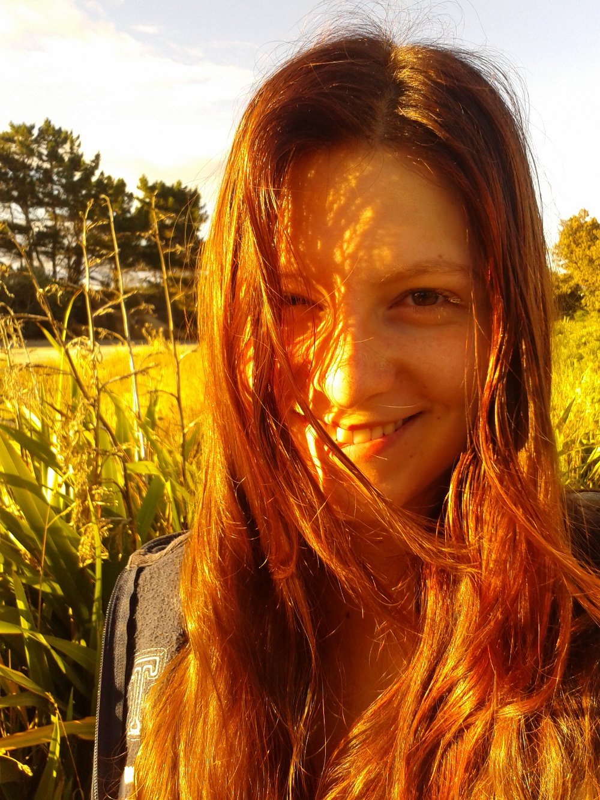

Über

Charlotte Mertz
Köln
Studentin
Studentische Hilfskraft beim WDR
Ausbildung
- B.A. Lehramt Musik und Englisch Gym/Ge
- seit 2016
an der Universität Köln - B.A. Lehramt Musik und Englisch GS
- 2 Semester
an der Universität Koblenz-Landau, Campus Koblenz - Abitur
- Landesmusikgymnasium Montabaur
Leistungskurse Musik, Biologie und Französisch
Projekte
- Chorleitung
- Seit Ende des Jahres 2018 darf ich den Kölner Küchenchor leiten. Wir sind ein Chor mit Spaß am Singen und proben wöchentlich in einem Wohnzimmer in Ehrenfeld.
- Band SUE (Session United Experience)
- Seit einigen Monaten bin ich Mitglied der Band SUE (Session United Experience). Aktuell sind wir eine lustige Mischung aus 13 Musikerinnen und Musikern, die sich wöchentlich zum Proben treffen. Laut eigener Beschreibung sind wir eine "Rock-Pop-Funk-Soul-Cover-KleinBigBand", spielen also alles, was uns Spaß macht. Die offizielle Website findet sich hier.
- CdE-Akademien
- Der Club der Ehemaligen der Deutschen SchülerAkademien e.V. richtet mehrfach im Jahr sogenannte Akadmien aus, die ich äußerst gerne
als (Co-)Kursleiterin, Mitorganisatorin oder Teilnehmerin besuche.
Geleitete Kurse umfassen unter anderem Themen wie Musiktheorie, das Musizieren mit Alltagsgegenständen oder Singen und Stimmbildung für Anfänger.
Als Teilnehmerin durfte ich bereits Einblicke in Notfalluntersuchungen, Fotografie und Menschliche Anatomie bekommen.
Zudem konnte ich auf diversen Akademien bereits einige Chorleitungserfahrung sammeln.
Mehr Informationen zum CdE finden Sie hier
Abgeschlossen
- Neologismus
- Seit seiner Gründung 2013 war ich Mitglied der Redaktion des Neologismus, einem (zwei-)monatlich kostenlos im Internet erscheinenden Magazin.
Ohne Themenschwerpunkt veröffentlichen hier Redakteure und Gastautoren (wissenschaftliche) Artikel, Kommentare, Kurzgeschichten, Gedichte oder Bilder.
Eine vollständige Liste meiner Beiträge und Artikel finden Sie hier.